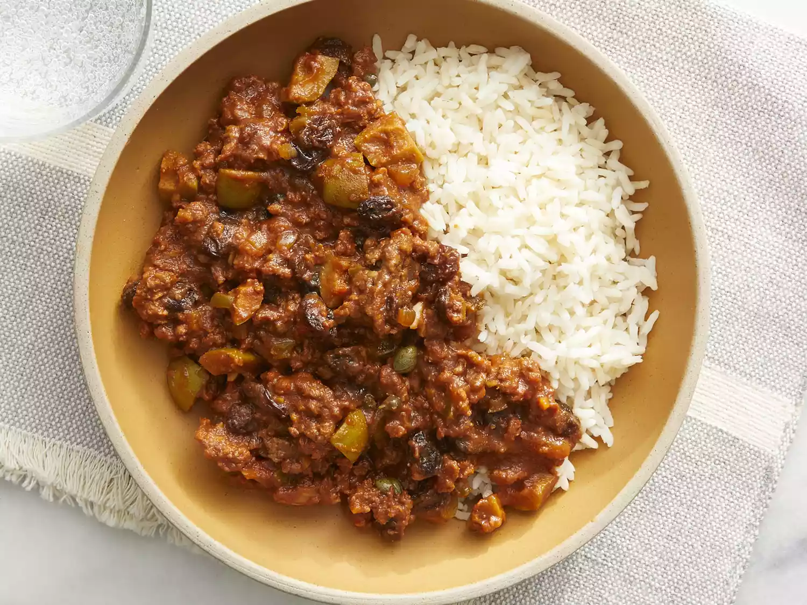

Classic Cuban-Style Picadillo

Description
This is a classic Cuban picadillo recipe for ground beef that is typically
eaten over white rice. It can also be used as a filling for tacos or empanadas.
It's delicious with fried ripe plantains.
Ingredients
- 1 tablespoon olive oil
- 1 small onion, chopped
- ½ green bell pepper, chopped
- 1 clove garlic, minced, or more to taste
- 1 pound lean ground beef
- 1 (8 ounce) can tomato sauce
- 6 large pitted green olives, quartered
- ½ cup raisins
- 1 tablespoon capers (Optional)
- 2 (1.41 ounce) packages sazon seasoning (such as Goya®)
- 1 tablespoon ground cumin
- 1 teaspoon white sugar
- salt to taste
Steps
-
Heat olive oil in a skillet over medium heat; cook and stir onion,
bell pepper, and garlic, onion in the hot oil until softened, 5 to 7 minutes.
-
Add ground beef into the skillet; cook and stir until crumbly
and completely browned, 7 to 10 minutes.
-
Stir tomato sauce, olives, raisins, capers, cumin,
sazon seasoning, sugar, and salt into the ground beef mixture.
-
Cover the skillet, reduce heat to low,
and cook until the mixture is heated through, 5 to 10 minutes.
Back to the index page